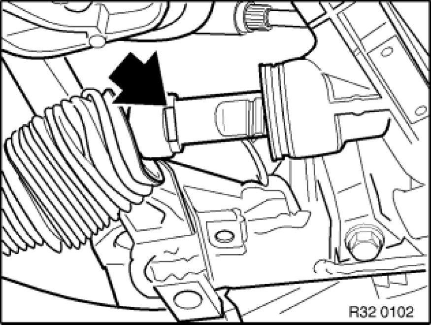
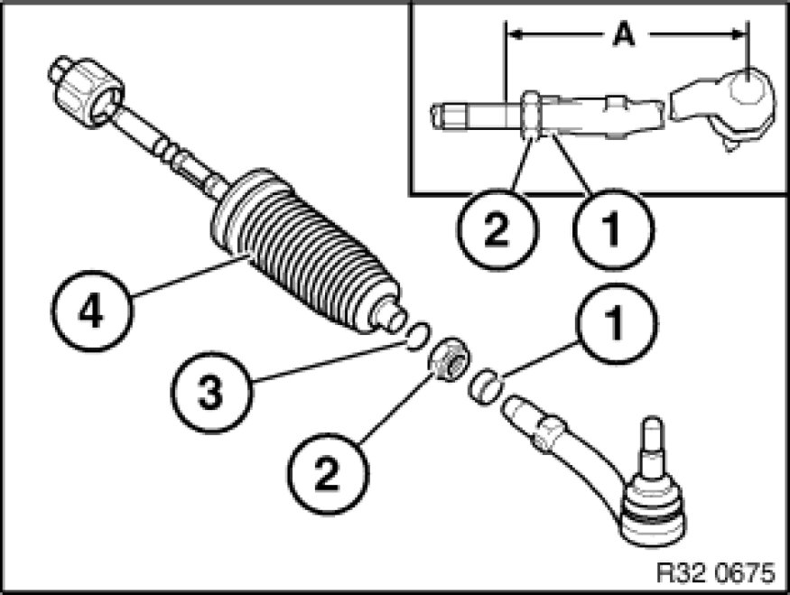

Replacing (Removing and Installing) Left or Right Tie Rod
32 21 231 - Replacing (removing and installing) left or right tie rod

Important!
The steering gear must be replaced if the polished surface of the rack is damaged (e.g. by corrosion)!

Necessary preliminary tasks:
- Remove tie rod end from swivel bearing Replacing Left or Right Tie Rod
- Remove gaiter from power steering gear Replacing Gaiter for Steering Gear on Left or Right and slide back

Important!
To avoid damage to rack and to suspension mounting, move rack in as far as possible.
Screw tie rod off rack of power steering gear.
Installation Note:
Clean rack.
Check surface of rack for damage (e.g. corrosion).
Replace O-ring.
Grease rack and O-ring (refer to BMW Service Operating Fluids)
Tightening torque 32 21 2AZ [1][2]Specifications.

On replacement, assemble new part with gaiter:
- Determine measurement (A) on old part to simplify following adjustment of front axle
- Slacken clamping nut (2)
- Screw off tie rod end; if necessary, grip tie rod with open-end wrench
- Remove clamping ring (1) and screw off clamping nut (2)
- Slide gaiter (4) and ear clamp and band clamp (3) onto tie rod
- Slide clamping nut (2) and clamping ring (1) onto tie rod
- Screw tie rod end onto tie rod to measurement (A)
- Tighten down clamping nut (2)
Tightening torque 32 21 5AZ [1][2]Specifications.
After installation:
- Only if replacing/removing tie rod end: Perform chassis alignment check
- Carry out steering angle sensor adjustment Adjustments